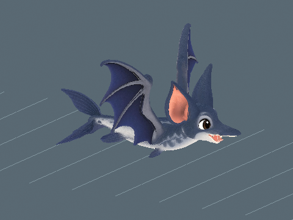

Animation previews, videos and model downloads are retained locally and are not hosted on this website. Text, assessments and still images remain available.
Deepwater Abyss / Creature profile
Batacuda
Critically Endangered
Perspective modelling reference · Open image for full size
About Batacuda
A sleek blue swimmer with broad velvety wings and soft pointed ears. Batacuda follows ripples at dusk, sweeping low enough for its tail to brush the surface.
👟 Fleet foot: 10% faster running, within area speed limits.
One active creature total: following or mounted. Choosing another replaces the current creature.
Hatch bonuses
First hatch: +7,500 Swimming XP and $1,000,000 Cash. Later hatches: +750 Swimming XP (10%), with no further discovery Cash.
One first-hatch award per player and species, shared across qualities and sizes. The certificate shows both credited amounts with the skill icon. Fixed amounts are independent of XP boosts. All hatch bonuses
Assigned game stats. The creature, egg shell and named wild egg spawning are integrated.
Animation repair, 31 October 2026: The revised model and clips are installed and source-verified in Edit. Chase 8.5, Idle 8.5, Walk 8.5 (shown previews). Native lifecycle and steady source clips pass their technical checks. Native GPU views, steering and transition quality, and live acceptance remain pending. A current Roblox Studio Edit image is recorded on this page. Current GIF/MP4 copies and the repair report are on this creature page. Saved developer votes are unchanged; saving, publication and live acceptance remain separate. Replacement model, 28 October 2026: Daniel supplied a different unrigged Batacuda. The large central tooth was removed while retaining the smaller side teeth and open mouth. Tiny inherited tail and degenerate-surface defects were repaired. The existing 42-joint rig was fitted locally and the original Idle and strong swim/fly clip source bytes were preserved. Zero legs, two wings, two ears, four lower fins and one forked tail match the design. Original maps, new measured blinking, forward travel and viewer wing clearance were verified. Local reimport and installed Edit checks at three sizes passed. Daniel approval and continuous gameplay remain pending. Release update, 28 October 2026: the real creature model, animations, intact species egg, Standard artwork, Fine/Superior/Epic/Legendary finishes, transparent actual-shell egg icon and existing transparent creature portrait are registered. Wild eggs are enabled in the assigned biome at ordinary initialization and dawn. Current sizes, mass, rarity, income, nest homes, five-minute player-count allocation and guardian models are retained. Source checks, installed readback and detached Edit egg rolls passed; gameplay, multiplayer, mobile and real storage/rejoin remain pending. Saving and publication remain Daniel-owned. Earlier stage notes: The supplied Batacuda GLB was imported through the native API on 27 October 2026. Its reusable hatch template and Home preview retain every triangle, all 42 supplied bones plus PetRoot, and embedded material maps. No mesh reduction was needed. Daniel requested swimming for its Deepwater Abyss home: it now has a sideways body/tail wave and gentle steering fins, with calm idle and stronger movement cycles. Bird flap and flying paths are disabled. Edit skinning, resizing and both swim-extreme views passed. Live hatching, continuous motion, following, multiplayer, device performance and storage acceptance remain pending. No manual save or publication was performed. The deployed species catalogue still needs integration; the installed model uses the existing local planned measurements. Following animation update, 28 October 2026: idle movement and fitted blinking are installed and verified on the native model under plan 04b25d3ca0534bf09f8f3776dcdddc60. Evidence: output/follower-idle-all. Live following and animation acceptance remain pending. Strong swimming/flying stroke, 28 October 2026: Walk now combines broad paired birdlike wingbeats, flexible recovery, a growing fish body/tail wave and forward surge. Original rig, skin, maps, idle and blinking remain. Native wingtip travel is about one body height vertically and tail sweep is 0.438 body heights. Export and restored Edit views passed at three sizes. Daniel animation approval and live gameplay remain pending. Evidence: output/batacuda-strong-stroke-v1/.
Parent reference masses: Bat (4.50 g) and Barracuda (10.00 kg). Parent reference sizes: Bat: 0.041 m (head-body length); Barracuda: 1 m (body length). Pet weight uses the retained species calibration multiplied by relative height and relative front-to-back length. Both dimensions scale together, so individual mass still scales quadratically. Length includes the tail and uses installed model depth normalized to standard height; it is an extent, not a curved body measurement. One stud is exactly 0.28 metres. Low-bodied parents use body length; the other recorded heights and bird body lengths are size proxies. These are game balance references, with range midpoints and explicit estimates rather than measured population means. Pet height is base height times its internal scale, with no four-stud floor or extra quality height bonus. Pet kg uses scale squared. Egg kg is the base creature kg times scale, and base egg dimensions multiply directly by scale. See the scale tables for the quality bands.
A Standard pet at internal scale 1 hatches at 2.8 studs (0.784 m) and 24.68 kg. The base statistics describe catalogue dimensions at scale 1.
Egg
Base height
2.040 studs
Base weight
24.68 kg
The egg and creature share one internal scale. Egg kg is the base creature kg times scale. All base egg dimensions multiply directly by scale, and quality chooses the scale band.
Installed Roblox model
Studio Edit / Idle pose. This is the installed creature in Roblox Studio. Live gameplay acceptance remains separate.
Earlier version / At 0 studs/s / 2026-10-31T11:13:44.178604+00:00
At 0 studs/s: The broad paired wingbeat continues at rest with a readable downstroke, softer recovery and restrained body and tail response. The face and long silhouette remain coherent. The sustaining beat is a stylized performance. This isolated view cannot establish force balance, and the far wing is partly hidden.
Retained earlier assessment. The current source needs a new review; this number does not approve the changed version.
Offline source skin with current runtime skeletal samples; not a live game capture.
Random facial overlays, blink cosmetics and look-around are omitted.
Earlier version / At 35.65 studs/s / 2026-10-31T11:13:44.178604+00:00
At 35.65 studs/s: The time-driven 4 Hz stroke, forward carriage and stronger tail action remain coherent at the declared 35.65 stud/s reference. The reduced root surge avoids an exaggerated rocking motion. Angry-eye cosmetics are omitted, and 35.65 stud/s is a review reference rather than a fixed gameplay speed. The sharp speed contrast is partly carried by world travel.
Retained earlier assessment. The current source needs a new review; this number does not approve the changed version.
Offline source skin with current runtime skeletal samples; not a live game capture.
Random facial overlays, blink cosmetics and look-around are omitted.
Authored-cycle timing at the listed preview travel speed; live gameplay speed may differ. The travelling excerpt resets at the loop boundary.
Earlier version / At 7 studs/s / 2026-10-31T11:13:44.178604+00:00
At 7 studs/s: At the actual 7 stud/s patrol reference, the distance-driven stroke reads as deliberate forward propulsion. Wing recovery remains clear and the travelling tail wave follows the body. The quarter view hides some far-wing detail. State transitions, live water movement and forces are outside this isolated source preview.
Retained earlier assessment. The current source needs a new review; this number does not approve the changed version.
Offline source skin with current runtime skeletal samples; not a live game capture.
Random facial overlays, blink cosmetics and look-around are omitted.
Travel uses the existing controller fallback stride; this clip has no fitted stride metadata.
Distance-driven runtime phase at the listed preview travel speed; live gameplay speed may differ. The travelling excerpt resets at the loop boundary.
2 November 2026. Patrol: 12 studs/s (3.36 metres/s) at 8.96 studs (2.51 metres) tall. The shown cycle repeats 2.06 times per second.
A faster aquatic cruise uses the retained wing and tail-wave cycle at about two cycles per second. Foot contact is inapplicable.
The existing body-animation scores remain separate. This review assesses patrol speed and cadence; it does not award a replacement animation score.

|
These are offline source-skin previews at the installed guardian scale. Route turns, obstacles, water transitions and multiplayer still need in-game review. Chase and egg-return tuning are unchanged. Existing developer decisions are preserved.
Blink review is pending. Its pass threshold is 7.5/10.
Download every action
Action downloads
Batacuda action files
Action
GIF
MP4
Idle
Chase
Walk
Blink
Not recorded
Not recorded
Recorded parent height and weight
These are the exact reference inputs used for this creature. Some are range midpoints or explicit estimates, rather than measured population averages. Height and body length are labelled separately.
Scroll the table sideways on a narrow screen.
Parent inputs and their arithmetic averages. Select a linked value to open its recorded source.
Western pipistrelle midpoint 3 to 6 g; equal-sex mean after subtracting reported tails from total lengths (66-27 and 73-30 mm).
Great barracuda representative adult reference below the museum large-fish threshold of 1.5 m and maxima of 2 m and 50 kg.
(Parent 1 size + Parent 2 size) / 2
How the weight was recorded
Western pipistrelle midpoint 3 to 6 g; equal-sex mean after subtracting reported tails from total lengths (66-27 and 73-30 mm).
Great barracuda representative adult reference below the museum large-fish threshold of 1.5 m and maxima of 2 m and 50 kg.
(Parent 1 kg + Parent 2 kg) / 2
Check the calculation at scale 1
Average parent size
(0.041 + 1) / 2 = 0.5205 m
Average parent weight
(0.0045 + 10) / 2 = 5.00225 kg
Chosen game height
2.8 studs x 0.28 = 0.784 m
Parent-derived creature weight
5.00225 x (0.784 / 0.5205)^2 = 11.348959614499 kg
Game balance multiplier
1x; 11.348959614499 x 1 = 11.348959614499 kg (historical parent baseline)
Retained height-only calibration
11.348959614499 kg
Length correction
11.348959614499 x 6.09 / 2.8 = 24.683987161535 kg
Catalogue creature weight
24.683987161535 kg
Base egg height, 50/50 blend
1.8 x sqrt((2.8 / 4) x (24.683987161535 / 4)^(1/3)) = 2.039611311527 studs
Matches the recorded averages and catalogue weight.
Game height is chosen for the creature design; it is not the average parent height. Individual pet height and length both multiply by saved scale. Weight uses their product, so uniform scaling remains quadratic. Values above are displayed to twelve decimal places; calculations use the full recorded values.
Scale, egg weight and carrying impact
These ranges use the actual quality bands and shared creature scale. Most rolls are near the midpoint.
Computed ranges at each quality. Carry speed is a percentage of normal movement before other modifiers.
Base rates are per second for a creature placed at Home. Eggs still incubating and creatures in inventory do not earn. Currency starts at $0. Hatched pets placed in your Home garden pay into your wallet every second while you are online. The currency is Cash. Normal income scales with saved size and quality: Standard 1x, Fine 2x, Superior 4x, Epic 8x and Legendary 16x. Followers do not earn garden income; active petting temporarily gives the petted creature 3x. See Game mechanicsXP and skill levels for the full rules. Grim Peeper pets earn $10 per second.
Reviewed
Reviewed means Daniel has reviewed the in-game model and animations and is happy with them.
Daniel tells Codex when he approves how a model looks and works. Codex records Daniel's approval and updates this shared site. Reviewed shows a tick when Daniel is happy with the in-game model and animations.
✗ Not reviewed
Daniel: ✗ Pending
Real model and animations, species egg, four shiny finishes and icons are installed. Assigned-biome wild eggs are enabled. Daniel model/animation approval and live gameplay acceptance remain pending.
Pet icon
The face icon used in the game. Labraduck also represents the Pets menu.
Collection artwork
Full-body artwork and its matching silhouette, prepared at 256 by 256 pixels for the Pets collection.